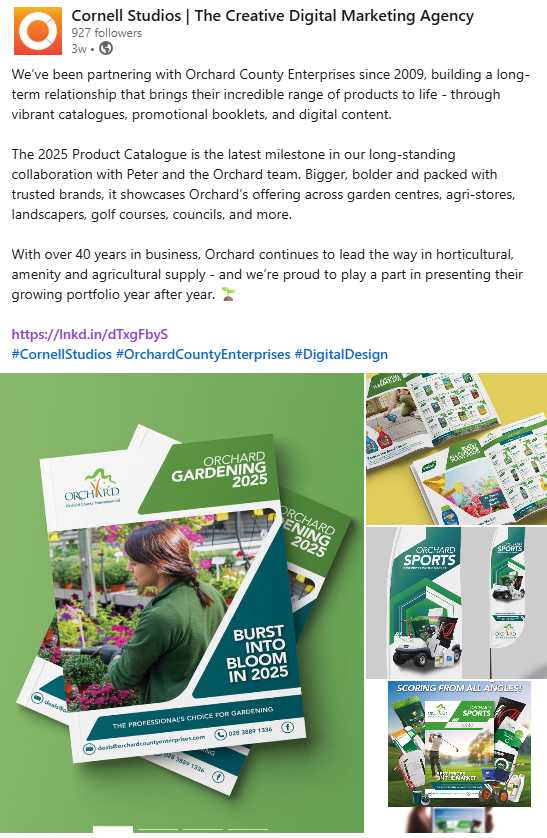
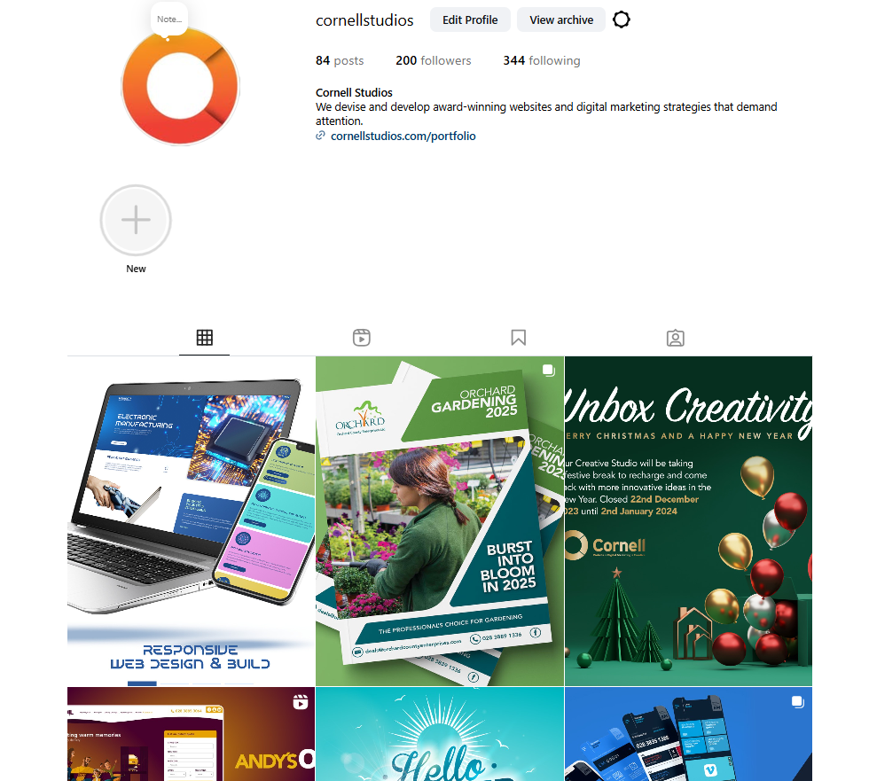
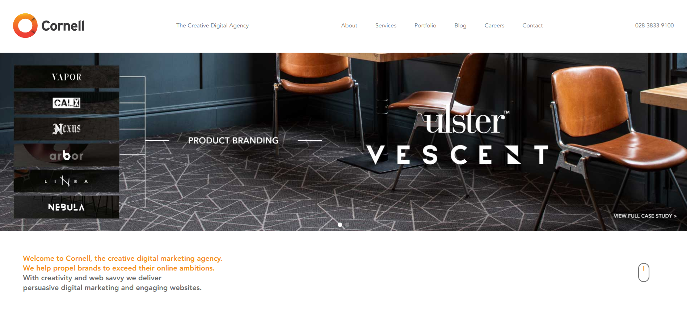

Cornell Studios
Cornell Studios are a Northern Ireland-based web design and digital marketing agency. Freelance work with the team has focused on reviewing and improving their social media strategy to maximize reach and audience engagement.


